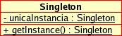
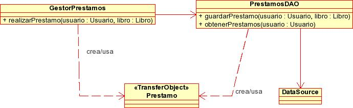
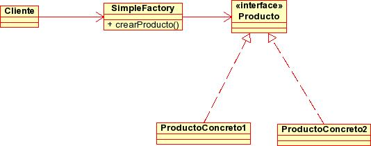
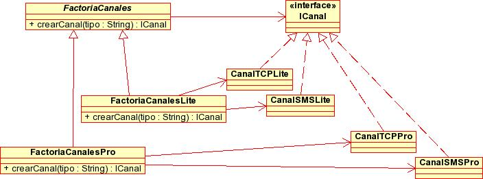
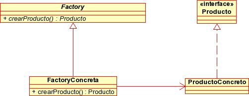
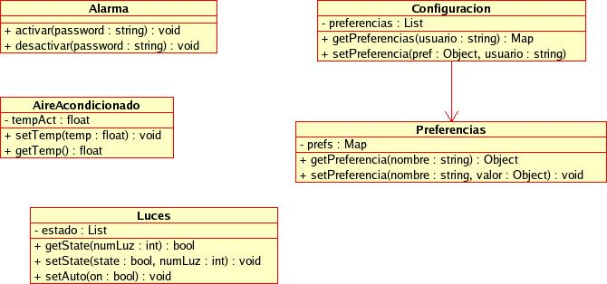
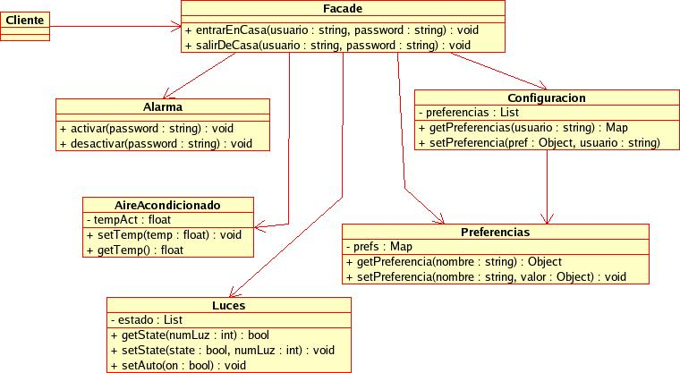

Charla 1: Introducción a los patrones de diseño. Algunos patrones básicos
Aunque cada aplicación J2EE tiene peculiaridades que la hacen única, en el proceso de desarrollo de casi todas las aplicaciones es necesario solucionar una y otra vez los mismos problemas: autentificación del cliente, persistencia de datos, separación entre presentación, lógica y control,... En lugar de reinventar continuamente la rueda, es mucho más productivo aplicar estrategias que ya hayan funcionado con anterioridad. Esta idea es la que lleva a la definición de los patrones software.
Por qué patrones
En ingeniería del software, un patrón (pattern) es una solución ya probada y aplicable a un problema que se presenta una y otra vez en el desarrollo de distintas aplicaciones y en distintos contextos. Es importante destacar que un patrón no es en general una solución en forma de código directamente "listo para usar", sino más bien una descripción de cómo resolver el problema y de ante qué circunstancias es aplicable.
Los patrones software fueron popularizados en el libro Design Patterns: Elements of Reusable Object-Oriented Software, que trata de patrones genéricos, aplicables a una amplia gama de contextos y a cualquier lenguaje orientado a objetos. Este libro popularizó el "movimiento" de patrones y se ha convertido en un clásico, ampliamente referenciado y que muchos han tomado como base para añadir patrones nuevos. Los autores de Design Patterns... son Erich Gamma, Richard Helm, Ralph Johnson y John Vissides, aunque de manera jocosa y popular son más conocidos como el Gang of Four. De hecho, en muchas publicaciones serias los patrones que aparecen en Design Patterns se referencian con las siglas GoF.
Ante todo este floreciente movimiento en torno a los patrones cabe preguntarse si realmente aportan beneficios. Se suele argumentar que los patrones ofrecen tres ventajas fundamentales:
- Están ya probados: son soluciones que han sido utilizadas con anterioridad de manera repetida y se ha comprobado que funcionan.
- Son reutilizables: corresponden con problemas que no son específicos de un caso concreto, sino que se presentan una y otra vez en distintas aplicaciones.
- Son expresivos: cuando un equipo de desarrolladores tiene un vocabulario común de patrones, se puede comunicar de manera fluida y precisa las ideas fundamentales sobre el diseño de una aplicación.
Por supuesto, los patrones no pueden ser la solución a todos los problemas de diseño y desarrollo de aplicaciones J2EE. Como cualquier herramienta o metodología son susceptibles de malos usos, y de abusos (uso "compulsivo" simplemente "porque son buenos"). La experiencia y el sentido común dictarán cuándo son apropiados y cómo utilizarlos.
Patrones J2EE
Los patrones J2EE están orientados específicamente a los problemas comunes a todas las aplicaciones J2EE. Algunos están basados en los patrones originales mientras que otros son más específicos del tipo de problemas que surgen específicamente en J2EE, bien sea por los tipos de aplicaciones que se suelen desarrollar con la plataforma o por las características (o deficiencias, incluso) de la tecnología. Los primeros fueron publicados en el libro Core J2EE Patterns, convertido también en un clásico dentro del "mundillo" J2EE. En la actualidad son muchos los libros y los sitios web dedicados íntegramente a patrones para aplicaciones J2EE o con algún apartado sobre ellos.
Una versión resumida del catálogo de Core J2EE Patterns está disponible en su sitio web. Siguiendo la idea de dividir la arquitectura de una aplicación en varias capas, los patrones se clasifican atendiendo a la capa a la que pertenecen. En la figura 5 aparece el esquema general en la que se muestra la situación de cada uno de los 21 patrones en el modelo de capas y las relaciones que existen entre ellos. Iremos viendo con detalle algunos de estos patrones y sus interrelaciones en las distintas charlas del módulo.

En los patrones que vamos a ver en el módulo mezclaremos por igual patrones J2EE con patrones genéricos. El resultado es una lista de patrones bastante ad-hoc, en cuanto al orden de explicación que seguiremos y en cuanto a los patrones que trataremos frente a los que dejaremos de lado. Hay que tener en cuenta que el objetivo no es dar una lista extensiva de los mismos. Si a los 21 patrones J2EE se les suman los 23 fundamentales del GoF surge un número demasiado elevado para las horas disponibles. Por ello se ha optado por describir solo algunos. El criterio de inclusión no ha sido su importancia per se, sino el hecho de que sea un patrón de uso habitual en aplicaciones J2EE. Para una lista de patrones más "estándar" se puede consultar cualquiera de los recursos especificados en la bibliografía.
Junto al nombre de cada patrón especificaremos si se trata de un patrón J2EE o procede del GoF.
Singleton (GoF)
Problema a resolver
Hay muchos casos en los que solo necesitamos una instancia de una determinada clase. Ejemplos típicos son clases que representan las preferencias del usuario o la configuración del sistema, o clases que sirven de interfaz con dispositivos físicos.
En estos casos hay que asegurarse de poder obtener una referencia a dicha instancia desde cualquier punto del código, y que solo haya una instancia creada, para evitar posibles problemas o inconsistencias. Una posible solución es definir variables globales (o sea, static), pero esto tiene dos problemas:
- Por descuido, se podría instanciar una misma variable en dos sitios distintos, lo que "machacaría" el valor anterior.
- El orden y momento de inicialización de las variables depende del compilador, lo cual puede ser delicado si unas dependen de otras y están en lugares distintos.
Discusión y beneficios
El patrón singleton nos permite asegurar que de una clase habrá solo una instancia, y proporciona un punto de acceso a ella global a todo el código. El diagrama de clases es muy sencillo, ya que se compone de una única clase:

El método getInstance() nos sirve para obtener la referencia a la única instancia de la clase. Además dicha instancia está almacenada dentro de la propia clase como una variable de tipo static (esto último puede resultar curioso, pero no deja de ser un "truco ingenioso" perfectamente legal para el compilador). Por supuesto el singleton tendrá otros métodos, los servicios que proporcione la clase.
La implementación de un singleton podría hacerse de varias formas, pero casi siempre se utiliza el mismo tipo de código. Vamos a resumir las ideas que nos llevarán a la implementación final:
- Si el constructor de una clase es
público, podrá llamarse desde cualquier otra. Por tanto, si
queremos asegurar un control de la creación de instancias, no
podemos tener un constructor público, debemos hacerlo privado:
public class MiSingleton { private MiSingleton() { //aqui va el codigo del constructor } } - Evidentemente, aunque el código anterior sea una definición
legal que compilará perfectamente, no parece tener mucho sentido.
Si el constructor es privado, solo se podrá llamar desde un objeto
de la clase MiSingleton. Pero ¡no podemos
instanciar objetos de esa clase, porque el constructor es privado!.
La solución al aparente dilema consiste en utilizar un método
estático para llamar al constructor:
public class MiSingleton { private MiSingleton() { //aqui va el codigo del constructor } public static MiSingleton getInstance() { return new MiSingleton(); } } //código aparte... MiSingleton ms = MiSingleton.getInstance(); - Con esto ya conseguimos controlar el acceso al constructor y
poder llamarlo desde fuera de la clase. Lo único que nos falta es
asegurarnos de que en todo momento existe una única instancia de
MiSingleton. El
"truco" consise en almacenar dicha instancia dentro de la propia
clase MiSingleton (como una variable static) y en introducir código en
getInstance que
chequee si dicha instancia está creada o no, para devolverla o en
caso contrario devolver un nuevo MiSingleton.
public class MiSingleton { //la unica instancia que existe de esta clase private static MiSingleton unico = null; private MiSingleton() { //aqui va el codigo del constructor } public static MiSingleton getInstance() { //instanciar el singleton si no existe if (unico == null) { unico = new MiSingleton(); } //devolver el singleton return unico; } } //código aparte... MiSingleton ms = MiSingleton.getInstance();
Como puede verse, este código es una especie de "idea feliz" que consigue de forma elegante el objetivo que nos proponíamos. Aunque quizá esto podría conseguirse de otras formas, esta es ampliamente utilizada y conocida, por lo que merece la pena usarla en lugar de intentar formas propias de hacerlo (después de todo, esta "reutilización de ideas" es consustancial a la idea misma de patrones software).
Relación con otros patrones
En aplicaciones J2EE, son múltiples los casos en los que solo se necesita una instancia de un objeto para toda la aplicación (aunque a este objeto lo puedan llamar varios threads simultáneamente). Piénsese por ejemplo en un objeto encargado de calcular costes de envío de pedidos. Los costes según métodos de envío, plazos de recepción, peso del paquete, etc. son información global para toda la aplicación, de modo que se puede implementar como un singleton.
Un uso típico de este patrón en aplicaciones enterprise es para implementar un encargado global de localizar recursos JNDI como por ejemplo conexiones JDBC, EJBs, etc. Esto es lo que se conoce como Service Locator.
Data Access Object (J2EE)
Problema a resolver
Supongamos que el código de acceso a los recursos de datos (normalmente bases de datos relacionales) está incluído dentro de clases que tienen además otras responsabilidades diferentes. Por ejemplo supongamos que en una biblioteca (el ejemplo que usaremos en las sesiones de integración) tuviéramos una clase GestorPrestamos que se ocupara de realizar y gestionar los préstamos de libros. En una primera aproximación podríamos hacer que esta clase se encargara tanto de la lógica de negocio (por ejemplo comprobar si un usuario es "moroso" antes de prestarle un libro) como del acceso a datos (introducir el préstamo en una hipotética tabla de préstamos).
Este tipo de enfoque lleva a sistemas poco modulares y difícilmente mantenibles. En nuestro caso, el cambio de las reglas de negocio implicaría cambios en GestorPrestamos. El problema es que además, un cambio en la base de datos también implica cambios en GestorPrestamos.
Claramente la implementación de GestorPrestamos descrita con anterioridad viola el principio de separación de incumbencias. Si nos llevamos la persistencia de datos a una clase separada y dejamos GestorPrestamos solo con la lógica de negocio conseguimos un sistema mucho más modular y mantenible.
Discusión y beneficios
El DAO (Data Access Object) es un patrón de diseño directamente basado en el separation of concerns, en el que se separa la persistencia de datos del resto de funcionalidades del sistema. El siguiente esquema UML muestra una estructura de clases típica para el DAO de préstamos de la biblioteca:

Como se observa en la figura, el DAO es el punto de entrada al almacén de datos (aquí representado por un DataSource JDBC) y proporciona operaciones de tipo CRUD (Create-Read-Update-Delete).
Destacamos algunos puntos importantes:
- Como se ve, el DAO no tiene por qué implementar todas las operaciones CRUD (quizá en nuestro sistema no se puedan borrar los préstamos, solo devolver el libro quedando el registro del préstamo en la base de datos).
- En general (aunque esto es una decisión de diseño), por cada objeto de negocio en nuestro sistema, crearemos un DAO distinto. En nuestro caso además del PrestamosDAO podríamos tener también un UsuarioDAO y un LibroDAO.
- Aunque aquí el almacén de datos se representa como una base de datos compatible JDBC no tiene por qué ser siempre así, como discutiremos a continuación
- La información que devuelve o se le pasa al DAO se encapsula en objetos de tipo transfer object (en nuestro caso la clase Prestamo), que, simplificando, no son más que "contenedores de información" y que trataremos en la discusión del patrón correspondiente.
Hay que tener en cuenta que si el DAO se considera un patrón J2EE (o hablando más en general un patrón de aplicaciones de tipo enterprise) es porque prácticamente todas las aplicaciones J2EE de cierta dimensión hacen uso intensivo de almacenes persistentes de datos (normalmente bases de datos relacionales) aunque muchas aplicaciones J2SE no lo hagan.
Otro importante beneficio del DAO es la independencia del almacén de datos: el cambio de motor de base de datos o el paso de usar un pequeño archivo XML a usar una base de datos relacional para almacenar datos solo afectará al DAO y no a las clases encargadas de la lógica de negocio o de presentación. Se suele usar el patrón Factory para poder instanciar los DAOs reduciendo al máximo la dependencia del DAO concreto a crear (por ejemplo de MySQL, Oracle, XML, fichero .properties, ...)
Relación con otros patrones
El DAO se relaciona comúnmente con los siguientes patrones:
- Transfer object: la información que se envía/recibe del DAO se "empaqueta" en estos objetos.
- Factory: con el objeto de conseguir la independencia del almacén de datos, comúnmente se usa este patrón para instanciar los DAOs.
Transfer Object/Value Object (J2EE)
Problema a resolver
Cuando se trabaja con arquitecturas de varias capas, un problema típico es cómo pasar los datos de una capa a otra. En el caso de la biblioteca que veíamos anteriormente, cuando por ejemplo queremos ver los datos de un libro, éstos tienen que sacarse de la base de datos, pasando por las capas de datos y negocio hasta la capa de presentación. Solicitar los datos uno a uno (título, autores, ISBN,...) no es una opción adecuada ya que en aplicaciones distribuidas incrementa innecesariamente el número de llamadas remotas. Necesitamos una forma compacta y organizada de pasar estos datos de una capa a otra.
Discusión y beneficios
Un transfer object no es más que un objeto que "empaqueta" datos para que puedan viajar entre las capas. Dicho objeto contendrá todos los datos que nos interesen accesibles mediante getters y setters. Por ejemplo, como ya se vio en el patrón DAO la comunicación entre la capa de negocio (clase GestorPrestamos) y la de datos (el propio DAO) se hace en base a transfer objects.
Nótese que aunque los transfer objects están directamente relacionados con los objetos del modelo de objetos del dominio, no se trata de los mismos objetos. Los objetos del dominio pueden contener lógica de negocio mientras que como ya se ha dicho los transfer objects son meros almacenes de datos. Además no tiene por qué haber una relación uno-a-uno entre objetos del dominio y transfer objects, como se discutirá a continuación.
Destacamos algunos puntos importantes:
- Por cada objeto de negocio puede haber más de un transfer object. De hecho, una estragegia muy común es usar un transfer object distinto para cada caso de uso. Por ejemplo, al ver los datos de un solo libro vamos a mostrar probablemente mucha más información que la que aparece en un listado de varios libros, por lo que podemos tener un LibroTO y un LibroListaTO.
- Un problema importante es el de la sincronización entre los valores del transfer object y los del objeto del dominio que representa. Hay que asegurarse de que dichos valores están actualizados o que una falta de actualización de los mismos no conlleve consecuencias graves (caso típico de las operaciones de solo lectura). En caso de usar los TO tanto para mostrar datos como para almacenarlos (TOs actualizables) habrá que llevar sumo cuidado para sincronizar la información de los TOs que hayan cambiado.
Factory (GoF)
Problema a resolver
El patrón factory pretende proporcionar una buena manera de instanciar objetos cuando la clase a la que pertenece el objeto instanciado puede cambiar, bien por modificaciones en el diseño o bien porque en tiempo de compilación no se conoce la clase exacta.
Por poner un ejemplo concreto, supongamos que tenemos un sistema de mensajería instantánea. Los mensajes se pueden enviar a través de varios canales (TCP/IP, SMS, buzón de mensajes,...) y hemos implementado una serie de clases que nos permiten hacer el envío por ellos: EnvioTCP, EnvioSMS, EnvioBuzon,... todas estas clases implementan la misma interfaz ICanal, y el usuario elige el medio a través del GUI del programa. El código que envía el mensaje podría ser similar al siguiente:
Mensaje mensaje;
ICanal canal;
...
mensaje = GUI.getMensaje();
nombreCanal = GUI.getOpcionEnvio();
if (nombreCanal.equals("TCP"))
canal = new EnvioTCP();
else if (nombreCanal.equals("SMS"))
canal = new EnvioSMS();
else if (nombreCanal.equals("buzon"))
canal = new EnvioBuzon();
canal.enviar(mensaje)
El código anterior es tedioso de modificar si se cambian los posibles canales de envío o aparecen canales nuevos (bluetooth, ...).
Es evidente que el código anterior no cumple esta condición, ya que es necesario insertar líneas de código y recompilar la clase para extender la funcionalidad.
Simple factory
Recordemos de nuevo ese principio básico del diseño que dice que hay que separar lo que varía de lo que permanece igual. En nuestro caso hemos visto que al tomar la precaución de usar una interfaz común para todas las clases lo que puede cambiar es la instanciación de la clase concreta que necesitamos. Por tanto, vamos a encapsularla y separarla del resto.
Si tuviéramos una clase auxiliar que nos proporcionara instancias concretas de la clase o interfaz deseados (en nuestro caso ICanal) podríamos hacer algo como:
Mensaje mensaje; ICanal canal; ... mensaje = GUI.getMensaje(); nombreCanal = GUI.getOpcionEnvio(); canal = FactoriaCanales.crearCanal(nombreCanal); canal.enviar(mensaje)
Que es un código mucho más limpio que la versión anterior. Ahora trasladamos los detalles de la instanciación a FactoriaCanales, que se ha convertido en una especie de factoría o fábrica de objetos:
public class FactoriaCanales {
public static ICanal crearCanal(String nombre) {
ICanal canal;
if (nombre.equals("TCP"))
canal = new CanalTCP();
else if (nombre.equals("SMS"))
canal = new CanalSMS();
else if (nombre.equals("buzon"))
canal = new CanalBuzon();
return canal;
}
}
A primera vista parece que simplemente hemos trasladado el problema a la clase FactoriaCanales. Es parcialmente cierto, en el sentido en que todavía es necesario modificar esta clase si se modifican o crean canales nuevos, pero no será necesario modificar ni recompilar ninguna de las clases que llamen al método FactoriaCanales.crearCanal (que podrían ser muchas). Hemos acotado los cambios necesarios a una clase únicamente.
Usando la terminología de patrones, la clase anterior es una "factoría simple" (simple factory). No es exactamente el patrón factory sino una versión simplificada de este. Podéis compararar el diagrama UML del simple factory con el del factory del apartado siguiente para ver las diferencias.

En el diagrama anterior, Cliente es cualquier clase que requiera los "servicios" del Simple Factory para crear objetos.
Factory method
Supongamos que el problema anterior se complica: ahora tenemos que distinguir entre usuarios lite, que no pagan una cuota y por tanto tienen algunas restricciones (número máximo de SMS, tiempo máximo de conexión, tamaño más limitado del buzón,..) y usuarios pro, que tienen menos restricciones en la mensajería. Necesitamos por tanto crear un canal lite y pro de cada tipo (SMS, TCP,...). Para organizar el código de manera flexible podemos usar el patrón factory method, a veces llamado simplemente factory.
Este patrón es ligeramente más complicado que la versión anterior. Tenemos una factoría "genérica" que es una clase abstracta y sirve para "fabricar" un producto, también genérico (un interfaz o bien una clase abstracta). Siguiendo con nuestro ejemplo, tendríamos una clase abstracta FactoriaCanales cuyo método crearCanal devolvería un nuevo ICanal. Las factorías "concretas" (clases que heredan de la clase de la factoría "genérica") sirven para "fabricar" productos concretos. En nuestro caso tendríamos dos clases que heredarían de FactoriaCanales: FactoriaCanalesLite y FactoriaCanalesPro, cuyo método crearCanal(tipo) devolvería objetos CanalTCP, CanalSMS, de tipo lite y pro respectivamente. La siguiente figura muestra el diagrama de clases para el ejemplo.

Esta es una forma del patrón que, aunque más compleja que el simple factory es más flexible y permite extender el sistema de una manera más elegante. Por ejemplo, la aparición de un nuevo tipo de usuarios digamos silver, con privilegios intermedios, conllevaría la creación de nuevas clases, como CanalSMSSilver y CanalTCPSilver, cuyas instancias las crearía una factoría FactoriaCanalesSilver. La ventaja de este enfoque es que no requiere modificar prácticamente nada del código ya existente. Las clases que envían y reciben mensajes simplemente trabajan con objetos ICanal y las clases que necesiten obtener nuevas instancias de canales simplemente necesitan una referencia al FactoriaCanales del tipo adecuado. Cambiando una simple línea de código (o un fichero de configuración) podemos convertir a un usuario lite en pro sin más que cambiar su FactoriaCanalesLite por una FactoriaCanalesPro.
La siguiente figura muestra el diagrama de clases genérico del patrón.

Nótese que no siempre es necesario que un factory concreto cree más de un producto distinto. En nuestro ejemplo, cada subclase de FactoriaCanales creaba distintos tipos de canal, pero no siempre es así. En ese caso el método que actúa de factoría de objetos no tendrá parámetros.
Facade (GoF)
Problema a resolver
Supongamos que tenemos un sistema complejo, que agrupa multitud de clases, y para realizar una tarea tenemos que llamar a varios métodos de estas clases en una secuencia precisa. Por ejemplo, supongamos un sistema domótico en el que tenemos el siguiente diagrama de clases

Imaginémonos las operaciones que hay que realizar al entrar en casa: hay que desactivar la alarma, poner el aire acondicionado a nuestra temperatura preferida, y encender las luces. Esto se podría hacer con un código similar al siguiente:
...
//de alguna forma, ya hemos obtenido una referencia a la alarma, configuración, aire y luces
//y tenemos también el nombre de usuario y el password
...
//desactivar la alarma
alarma.desactivar(password);
//obtener preferencias de usuario
Preferencias prefs = configuracion.getPreferencias(usuario);
//poner el aire acondicionado a la temperatura deseada
Float temp = (Float) prefs.getPreferencia("temperatura");
aire.setTemp(temp.floatValue());
//poner las luces en "auto" si es la preferencia del usuario
String luces = (String) prefs.getPreferencia("luces");
if (luces.equals("auto"))
luces.setAuto(true);
...
Como se ve, una operación tan sencilla en apariencia implica manejar un número elevado de objetos y métodos. salirDeCasa() sería igual de tedioso: apagar las luces, el aire, activar la alarma.... Un cliente que quiera invocar una de estas operaciones no debería necesitar tanto código.
Discusión y beneficios
Parece inmediata la idea de crear una clase a la que trasladaremos todo este código y a la cual puedan acceder los clientes que lo necesiten. Esto es ni más ni menos que un facade.

Un Facade (fachada) consiste en implementar un interfaz simplificado para un sistema complejo. La idea es implementar una clase con un interfaz sencillo y que encapsule los detalles de la interacción entre todas las clases del sistema. Es importante notar que se sigue permitiendo el acceso directo a las clases del sistema a los clientes que necesiten "acceso a bajo nivel" pero se simplifica la interacción para los que no necesiten más que operaciones comunes.
En aplicaciones J2EE, las fachadas se suelen utilizar para proporcionar un "frontal de servicios" de la capa de negocio. De este modo, la interacción de los clientes (web, swing, etc...) con esta capa se simplifica considerablemente. Como veremos en charlas posteriores, en aplicaciones distribuidas las fachadas también mejoran la eficiencia del sistema, ya que las operaciones "de fachada para adentro" serán todas locales y la única llamada remota será la del cliente a la fachada.